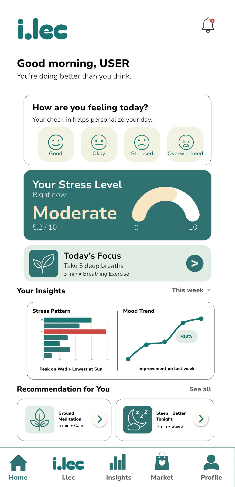

We've Got You.
Here for Your Healing, Not Just Your Hustle.
An AI-powered early stress awareness and support companion designed to help people recognize stress before it becomes overwhelming.

A Private, Accessible Space for Everyday Stress.
i.lec is a Brunei-based preventive digital wellbeing project, powered by responsible AI, focused on helping people recognize and respond to everyday stress before it becomes overwhelming.
Through a safe and private platform, i.lec provides tools, resources and a supportive companion to help you check in, reflect, and take meaningful steps towards better wellbeing. It is designed to support people — not replace therapists, counsellors, doctors, or professional care.
Non-Clinical Boundaries
Not a diagnosis tool. Designed for early support and self-awareness.
Safe & Private
Your thoughts, data and privacy matter. Always.
Holistic Support
Tools, resources and a companion — all in one place.
Who is i.lec for?
Designed for Anyone Navigating Everyday Stress
Students
Academic, personal, and social stress.
Young Adults
Need a low-pressure first step.
Working Professionals
Workload pressure, burnout risk, or limited time.
Anyone in Need
Anyone who needs a private space to pause and reflect.
Why Unresolved?
The Gap Between "I'm Fine" and "I Need Help."
Support systems are often reactive. i.lec addresses the gap earlier.
Awareness Comes Late
Users may only realise they are struggling after stress affects study, sleep, or daily life.
Asking for Help Feels Hard
Many people need a private first step before speaking to someone else.
Support is Often Reactive
Institutions usually respond after burnout, absence, or crisis.
The Missing Layer
A calm, accessible layer between 'I'm fine' and 'I need help.'
The Solution
How i.lec Works
Simple steps. Meaningful support.
Check-in
Notice how you're feeling in the moment.
Reflect
Talk through what's on your mind.
Ground
Try practical coping prompts and exercises.
Track
Notice patterns in your stress over time.
Connect
Find relevant resources and trusted support.
Our Core Values
H.E.A.R.
Human-Centred
Technology should adapt to people, not the other way around. We design around real human needs, experiences, and boundaries.
Empathy
We listen without judgement. Every experience of stress is different, and people deserve to feel heard before they are given advice.
Accessibility
Early support should not feel distant, complicated, or intimidating. We strive to make wellbeing support easier to approach and more accessible.
Responsible AI
AI should support human wellbeing responsibly, transparently, and within clear boundaries. i.lec is built to complement human care, not replace it.
Our Mission
To make early stress awareness and emotional support more accessible through responsible artificial intelligence.
Our Vision
A world where taking care of your mental wellbeing starts before you reach your breaking point.
The Team Behind i.lec
Meet the Founder
A solo-founded initiative — building the vision, product and technology end to end.

Waznah binti Hj Mohd Sallehin
Founder, CEO & Developer
Waznah is a solopreneur leading i.lec end to end — from product direction and user experience to front-end development, research, and partnership exploration. She holds a Pearson BTEC Level 5 HND in Computing (Network Engineering) and is currently pursuing a Bachelor's degree in History and International Studies at Universiti Brunei Darussalam. Her work sits at the intersection of technology, policy, and human behaviour, with a focus on responsible AI and preventive digital wellbeing.
She is also the Co-Founder and former CTO of MindBridge, a mental health practitioner–client management system, and was selected as a participant in the AI for Asia Fellowship (SIKLAB, 2026) representing Brunei.
Preparing for Controlled Pilots & Clinical Validation
We are actively collaborating with educational institutions, youth groups, and advisory professionals to refine our safety framework prior to public deployment.